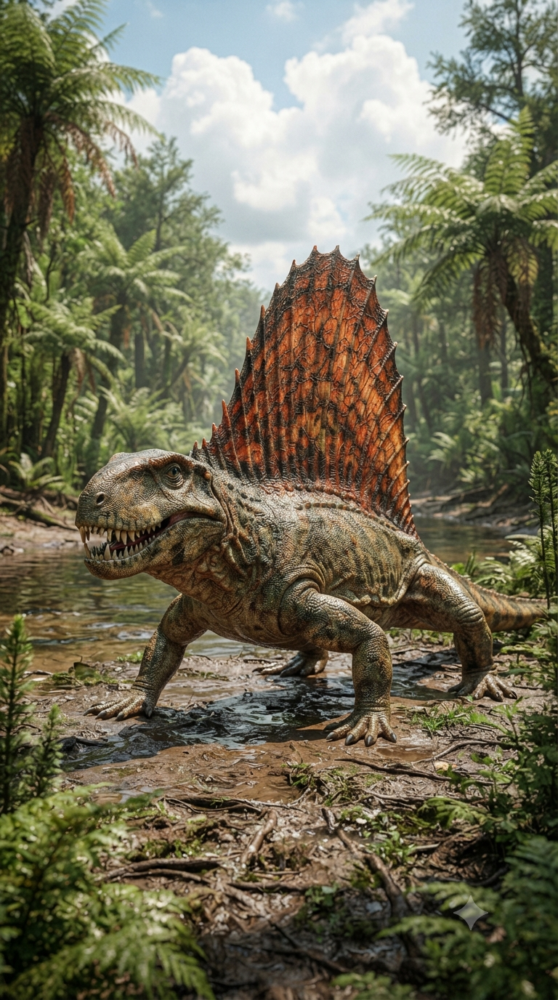
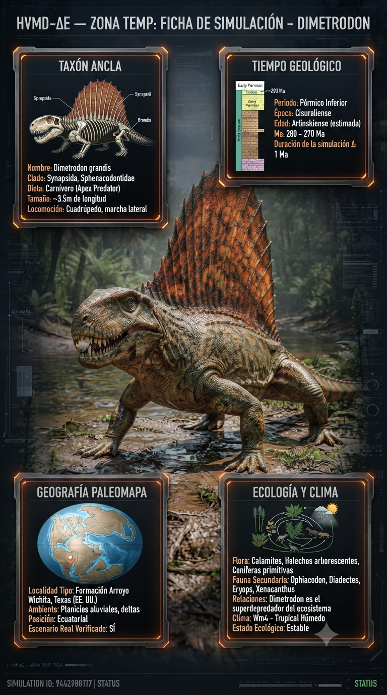
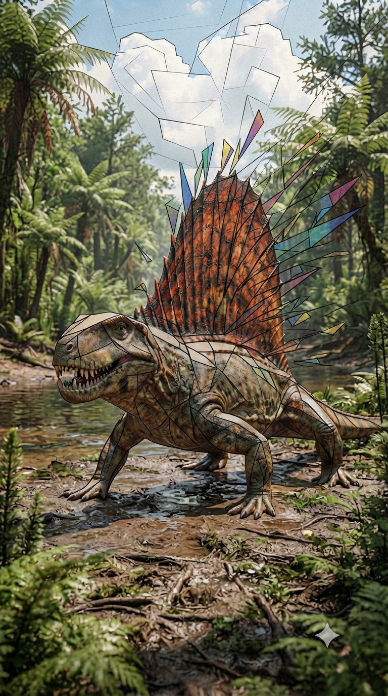
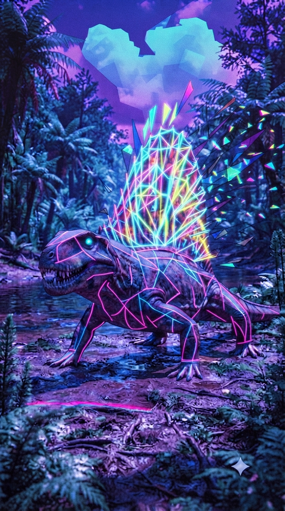

Paleoficha de PalEntropía




TAXÓN:
Dimetrodon grandis
CLADO:
Sphenacodontidae (Sinápsidos basales, no dinosaurios)
DIETA:
Carnívoro/Depredador tope (cazador oportunista, capaz de capturar presas grandes incluyendo otros sinápsidos de gran tamaño)
TAMAÑO:
Aprox. 3.2 a 3.5 metros de longitud y 250+ kg
LOCOMOCIÓN:
Cuadrúpeda; postura semi-erguida con locomoción lateral ondulante que limita la velocidad sostenida pero permite ráfagas de ataque potentes.
TIEMPO:
Pérmico Inferior (aprox. 280–272 Ma)
GEOGRAFÍA:
Pangea (región ecuatorial del continente Euramérica)
EQUIVALENCIA PALEOGEOGRÁFICA:
Zonas de tierras bajas, con ríos estacionales y vegetación exuberante.
AMBIENTE PALEAOECOLÓGICO:
Ecosistema rico en tetrápodos, dominado por la abundancia de agua y alta presión depredatoria.
ECOLOGÍA:
• Flora: Bosques de helechos arborescentes, licópsidas y las primeras gimnospermas.
• Fauna secundaria: Comunidad diversa de sinápsidos depredadores y herbívoros, junto con grandes anfibios temnospóndilos.
• Nichos: Depredador tope. La característica "vela" dorsal, soportada por espinas neurales elongadas, es un tema de debate constante: termorregulación, exhibición intraespecífica o almacenamiento de lípidos. Dimetrodon poseía una dentición diferenciada (heterodoncia), incluyendo colmillos frontales y dientes carniceros, adaptados para desgarrar la carne de presas grandes como el herbívoro Edaphosaurus.
• Relaciones: Sphenacodontidae. Más cercanamente relacionado con los mamíferos (nosotros) que con los reptiles modernos. Su linaje representa la máxima especialización en depredación antes de la extinción masiva del final del Pérmico.
CLIMA:
Wm16 (Pérmico tropical). Condiciones climáticas cálidas con estacionalidad hídrica, permitiendo un metabolismo activo pero sujeto a las fluctuaciones de temperatura ambiental.
ESTADO ECOLÓGICO:
Estable. Dimetrodon es el epítome de la eficacia depredatoria en el Pérmico, un taxón que dominó los ecosistemas terrestres mediante una combinación de fuerza física y especialización dental.